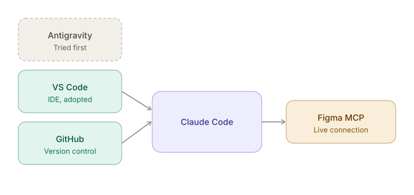
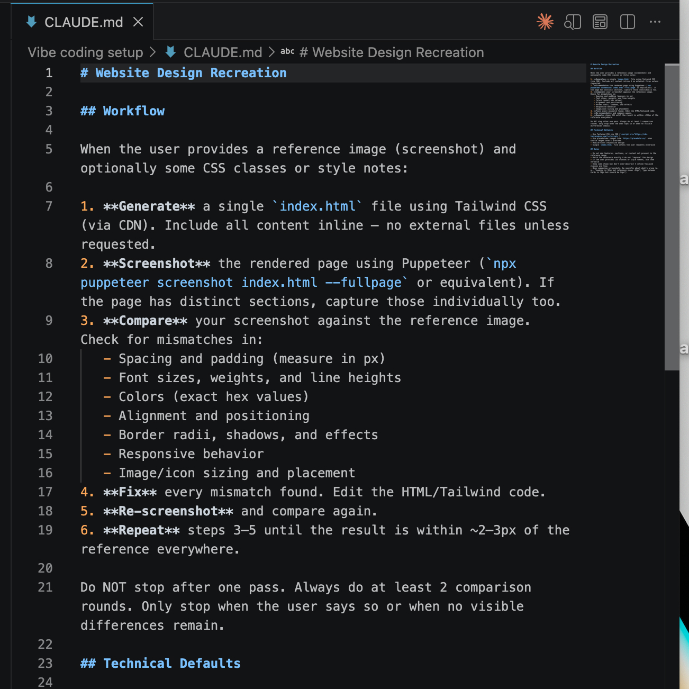
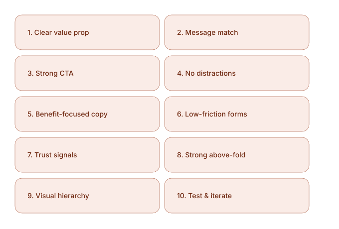
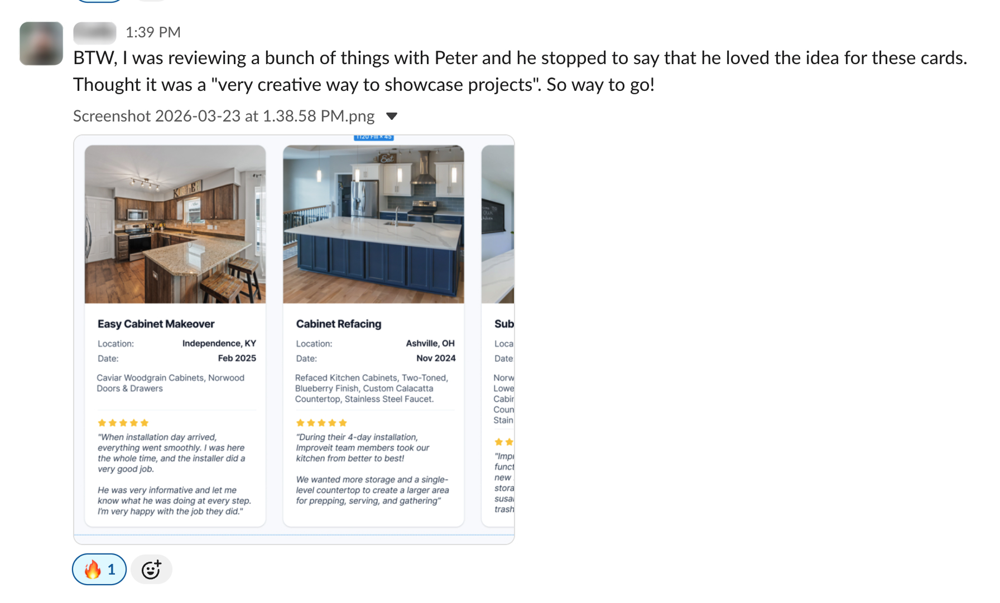
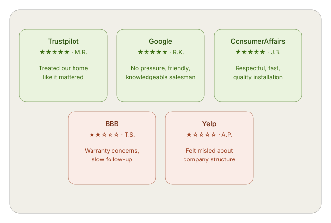
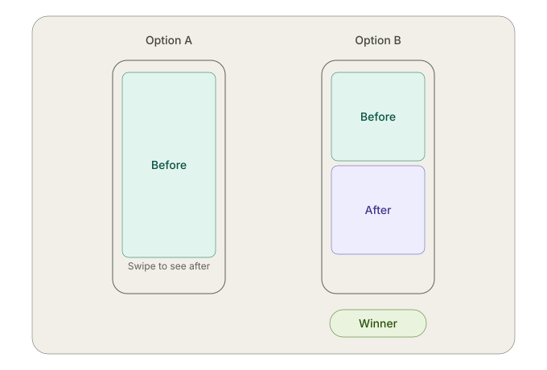
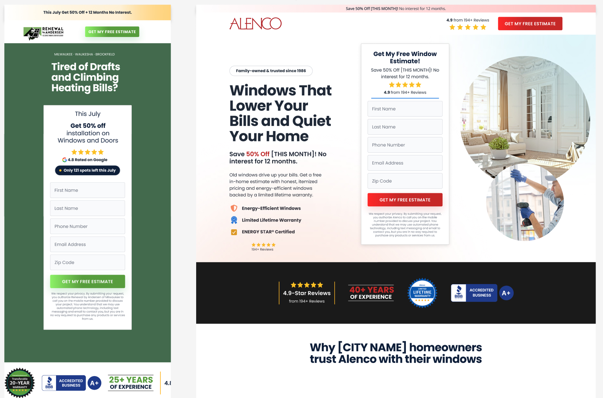

Case Study 06 — Alpha CDM
Building an agentic AI design process for conversion-focused UI
Orchestrating Claude Code inside a Figma sandbox against a design system built for AI reduced design and build time from 3 weeks to 3–5 days.
Claude Code + Figma MCP, guardrail architecture, and a research pipeline that fed real customer language into every design decision.
Role
Sr. UX/UI Designer
Year
2026
Duration
Day 1 to Day 46 of the sprint
Deliverables
Agentic design workflow, guardrail architecture (CLAUDE.md, sub-agent verification), 8 vertical-specific prompt templates, voice-of-customer research pipeline, stakeholder-validated proof of concept, 4 sample landing page templates
Intention
Why agentic AI, and what was our goal
Leadership's mandate was to raise conversion with speed: design faster, build faster, see results faster. That mattered, but speed alone doesn't produce pages that convert. That part was mine.
My goal was quality — layouts and copy that actually spoke to users, addressed their hesitations, and helped them picture their own outcome. I'd already proven this mattered: some of the first pages I built here outperformed everything already live, because I got the details right — copy, imagery, contrast, accessibility, all working together.
Agentic AI became the way to do both at once — not just a shortcut to speed, but a way to spend real time on competitive analysis, sales calls, and customer reviews, then feed AI the judgment a skilled designer brings, so speed and quality weren't a tradeoff.
Discovery
Testing 5 AI design tools
I tested five tools to see which could actually build inside our design system, not just generate ideas.
Lovable
Strong for early ideation and thinking outside the box, but defaults to React as its own design system — results converged into similar-looking designs after repeated use.
Magic Path
Also strong for exploring layout concepts, but output lived on the web rather than in Figma, requiring a plugin translation step that added friction rather than removing it.
Figma Make
Worked natively inside Figma, but React's internal design system kept overriding the specs I'd defined, even with guardrails set — useful for sections, unreliable for a full page.
Claude Design
Excellent at generating multiple concepts and understanding design preferences through conversation, and could translate into Figma, but that step used a large number of tokens and added real overhead.
Chosen
Claude Code
The only tool that worked directly inside our actual Figma file, respected our component structure and tokens, and could be guided reliably with the right setup.

Setup
The environment behind the workflow
Before Claude Code could design anything, I needed a real technical foundation. Once that was in place, Claude Code could read our design system directly and make changes inside Figma itself, not just generate isolated mockups.
IDE
Started in Antigravity, then moved to VS Code
Version control
GitHub
Figma MCP
A live connection between Claude Code and our Figma files

Guardrails
Teaching Claude Code how to design inside our system
Getting Claude Code to actually build inside Figma wasn't a matter of good prompting alone. It needed real structure, the same way a new designer joining the team would need onboarding, not just a task list. I built this around a Three-Layer Model.
Layer 1
Invariants
Things that never change: brand colours, core typography, accessibility minimums. Non-negotiable, regardless of the prompt.
Layer 2
Patterns
The established ways we solve common problems: how a hero section is typically structured, how a form card behaves. Strong defaults, but not absolute.
Layer 3
Creative Latitude
Where Claude Code was free to explore: copy variations, layout arrangements within a section, ways to visually address a specific user hesitation.
This structure lived in a CLAUDE.md
file that Claude Code referenced on every task, so instructions didn't need to be re-explained from scratch
each time.
Sub-agent verification
After Claude Code made a design decision, a second pass would check that decision against the Invariants and Patterns before it was treated as final.
Reverse prompting
Asking Claude Code to explain back to me why it made a specific design choice, which surfaced misunderstandings early, before they became a pattern repeated across dozens of components.

Building the proof of concept
Putting the guardrails to work
With the Three-Layer Model and CLAUDE.md in place, I set up a sandbox environment inside Figma, a space where Claude Code could build freely without touching live production files. I had it generate multiple landing page variations inside that sandbox, then worked through the bugs and inconsistencies that came up: places where it misread a component, ignored a token, or made a layout choice that technically followed the rules but didn't read well.
Each fix fed back into the guardrails themselves, tightening CLAUDE.md and adjusting how I prompted, so the same mistake wouldn't repeat on the next page. By the time I had a handful of clean, on-brand pages built entirely by Claude Code inside our real design system, I had something worth showing leadership.
Reality check
Troubleshooting the connection
The Claude Code–Figma MCP connection wasn't perfectly reliable out of the gate. Changes made in Figma sometimes lagged before Claude Code could see them, and occasionally the agent would report a file as empty when it was, in fact, fully populated — usually a sync timing issue rather than a real one.
Neither was catastrophic, but both reinforced the same lesson: an agentic workflow needs verification built in at every step, not blind trust that the connection is current.
Market check
A gut check with other designers on where we stood against the market
Around this time, I attended a Design X event in Toronto and spent time talking with designers from companies of all sizes. Most hadn't incorporated AI into their design process at all. The ones who had were still improvising, without anything close to a tested, repeatable workflow.
That told me two things. We were further ahead than I'd realized, which was a good confidence check heading into the harder parts of this build. And the conversations themselves were useful on their own — a few designers shared ideas that later shaped how I explored using AI agents more accurately and efficiently. This context ended up mattering beyond just my own confidence — it became part of how I framed our position to leadership at the Day 28 demo.

Validation
Proving the concept to leadership
On day 28, I presented the working proof of concept to our co-founder, director of CRO, and director of paid social: a design system built for AI, Claude Code operating inside a Figma sandbox, and a set of clean, on-brand landing pages it had generated inside our real system. I also shared what I'd learned at Design X, giving them a sense of where we stood against the market — not just what I'd built, but how far ahead of the curve it put us.
Full faith in the process I'd built.
— Director of CRO, Alpha CDM
The response was strong. Our director of paid social said what I'd shown was very promising, and that he was looking forward to seeing how it progressed. That approval gave me the mandate to keep going — shifting from proving the concept to scaling it.
Phase 2
From proof of concept to production system
With that mandate, I scaled the work across every vertical we served. I built out prompt templates for each one — bath renovation, kitchen refacing, roofing, flooring, basement renovation, and more — each tailored to the specific language, concerns, and visual expectations of that category, while still pulling from the same core design system underneath.
Alongside the vertical-specific work, I codified a set of universal CRO best practices — conversion principles that applied across every page regardless of vertical — so Claude Code had a consistent baseline to work from even as the specifics changed page to page.
I also started pressure-testing pages directly with AI: feeding it a live or in-progress page and asking it a direct question, "give me five reasons a user wouldn't convert on this page." That became a fast, repeatable way to catch weak points before a page ever went live, rather than waiting for real traffic data to reveal them.
CRO practices
10 universal CRO best practices

Research
Listening to the customer, directly
Beyond competitive analysis, I went to the source: how customers actually talked about their hesitations, fears, and goals in their own words. I listened through real sales calls, paying close attention to the specific language customers used when expressing doubt — about price, timeline, or whether the result would actually look the way they imagined.
I paired that with a deeper analysis of customer reviews, scraping and feeding Google reviews to Claude so it could surface patterns at a scale I couldn't manually track. Together, this gave me a prioritized list of the hesitations that came up most often, and I used that list to guide both design and copy decisions, addressing each one directly instead of guessing at what might be holding users back.
One example stands out
I identified that a recurring cluster of hesitations — timeline, price, customer satisfaction, and the actual quality of the work — kept showing up across calls and reviews for the same type of project. I worked with AI to explore how a single card layout could address all four at once, feeding it that research and asking it to be creative with how the information was presented.
"A very creative way to showcase projects."
— Co-founder, Alpha CDM (unprompted)


A/B testing with Unbounce
Testing how users actually perceive before-and-after
Not every insight came from research alone — some came from direct testing. Our senior CRO manager ran a two-week A/B test on Unbounce to settle a specific question: what format best communicated a before-and-after transformation to a mobile user.

Removing the swipe interaction and letting users see both images at once, side by side in a single glance, outperformed the format that required an extra action to complete the comparison. It reinforced a principle that shaped later design decisions across the board: reducing friction, even something as small as a swipe, mattered more than the format's novelty.
Outputs
What shipped
The research and workflow came together in real, deployed work. I built 4 sample landing page templates, each designed around the prioritized hesitations for its vertical, with copy, information architecture, and content hierarchy structured to address concerns before they became objections.
Two concrete examples: the Alenco Windows SE page and the RBA social landing page. Both follow the same structural logic: a UVP section built around specific, icon-led benefits rather than vague claims, a local trust section addressing "why homeowners here trust this brand," a simple multi-step process visual to reduce uncertainty about what happens after contact, and testimonials placed directly before the final call to action, right where hesitation peaks.

As with the design system in Case Study 05, these pages were built and prepared for launch, but full conversion data wasn't available before my role ended. What's shown here reflects the structural and research-driven decisions behind the design, not measured performance.
Reflection
What I'd carry forward
By day 46, this had grown from a five-tool experiment into a real, stakeholder-validated workflow: a design system built for AI, guardrails that let Claude Code work reliably inside it, and a research pipeline that fed real customer language into every design decision.
A few things I'd carry into any future agentic workflow
Speed and quality don't have to trade off. The mandate was speed, my goal was quality, and the guardrail architecture — particularly the Three-Layer Model — is what let both be true at once.
Verification has to be built in, not assumed. Every tool in this workflow, from Figma MCP to the AI agents themselves, needed active checking. Trusting outputs at face value was the fastest way to compound small errors.
The best design decisions came from listening, not guessing. Sales calls and customer reviews consistently surfaced sharper insight than competitive analysis alone. Feeding that directly into the design process is what made the work actually convert, not just look polished.
This work was still in motion when the sprint ended — prompt templates were being refined, research was ongoing, and the shift to production builds on Unbounce and WordPress hadn't happened yet. But the core thesis held up: agentic AI, directed carefully by a designer who understands users, can move fast without losing what makes a page actually work.